Was ist eigentlich JULA?
Die JUngscharLAger-Geschichte, unser Träger und was uns antreibt.
Ein Zeltlager mit Tradition
Das JUngscharLAger ist ein evangelisches Zeltlager für Kinder der Schulklassen 1 bis 8. Seit über 25 Jahren gibt es diese wertvolle Arbeit, die meist im Zwei-Jahres-Rhythmus stattfindet.
Leider musste das JULA von 2012 bis 2015 unfreiwillig drei Jahre pausieren – anstatt wie gewohnt zwei Jahre – aufgrund von Problemen bei der Zeltplatzsuche. Seitdem geht es aber wieder verlässlich im Zwei-Jahres-Turnus weiter, und 2027 ist es wieder soweit!
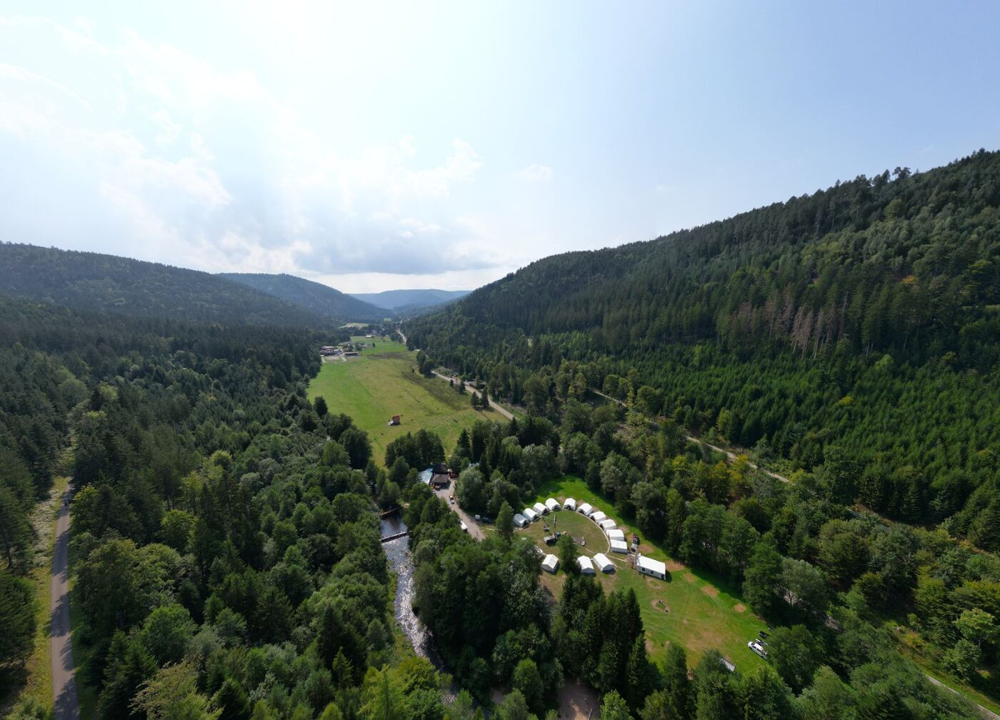
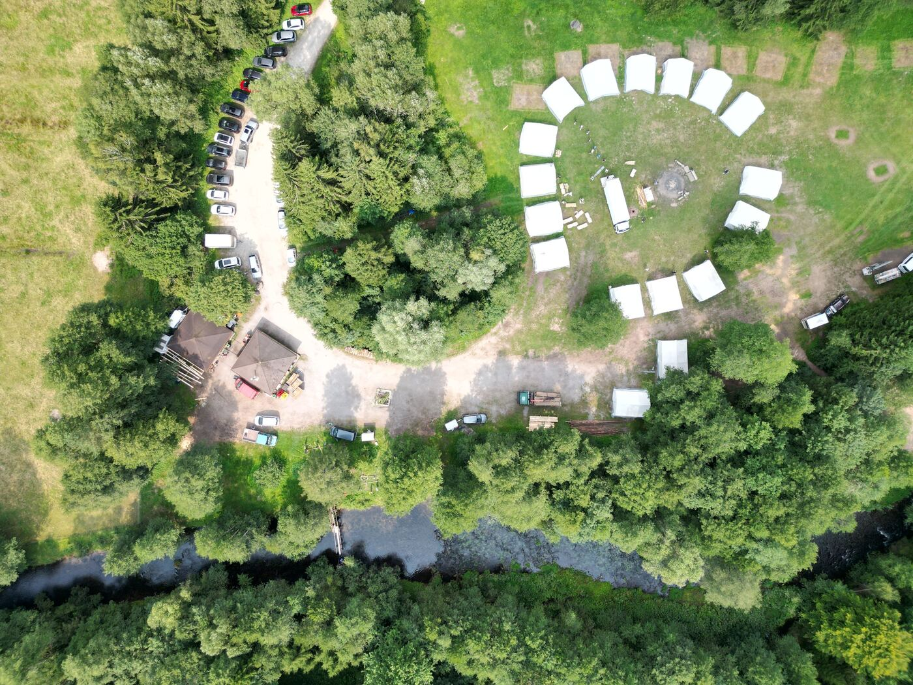
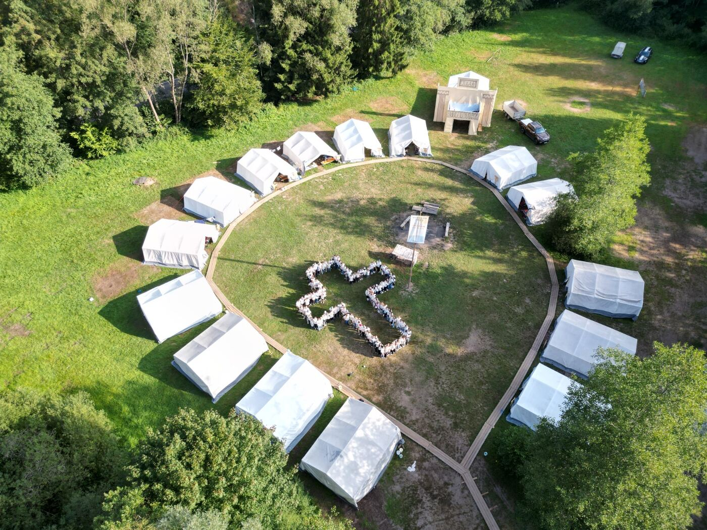
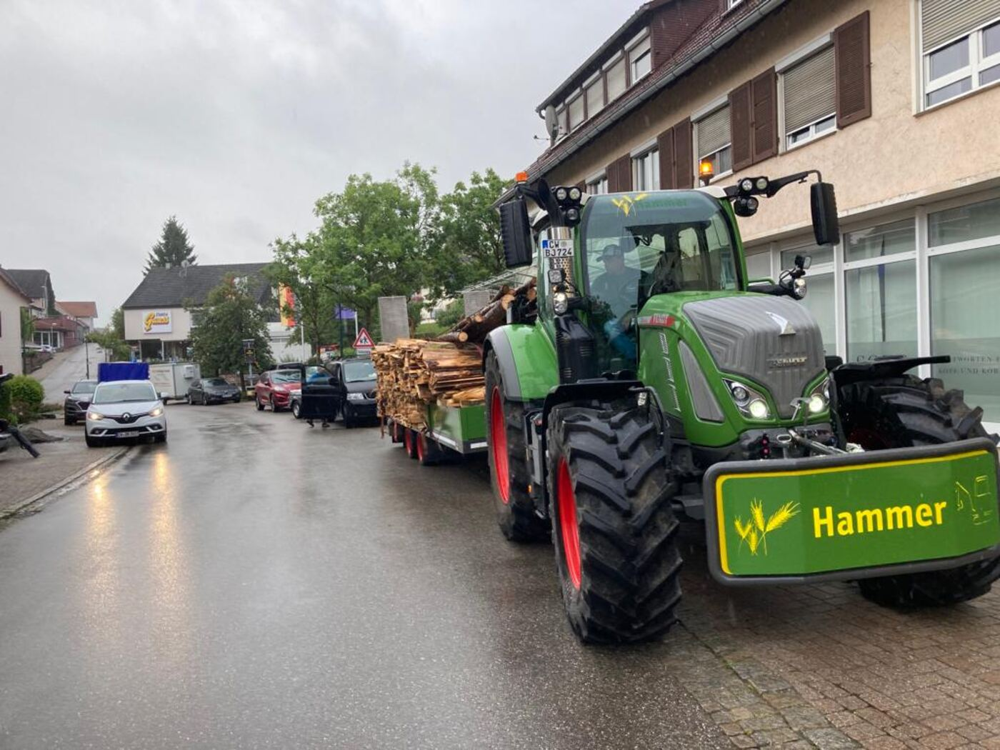
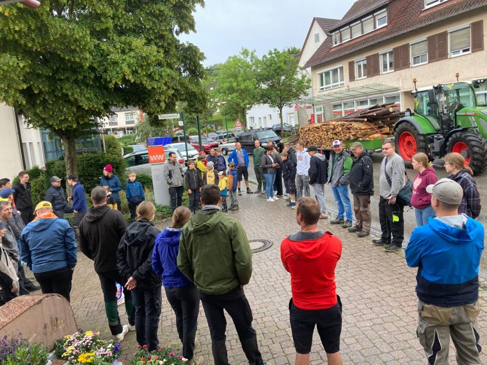
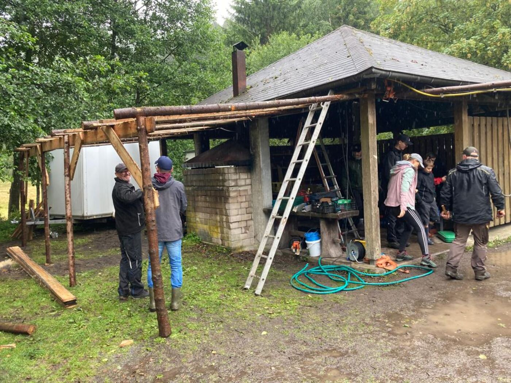
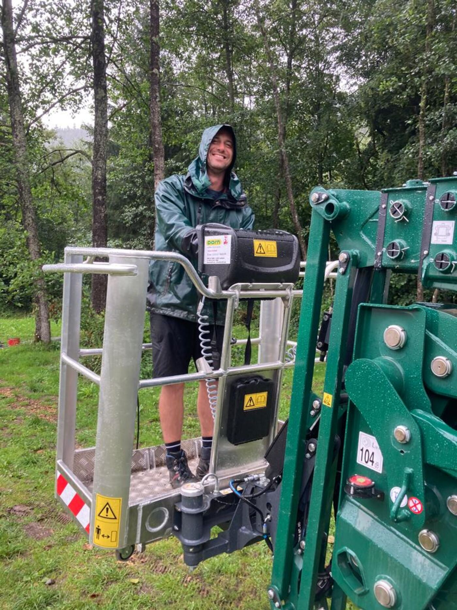
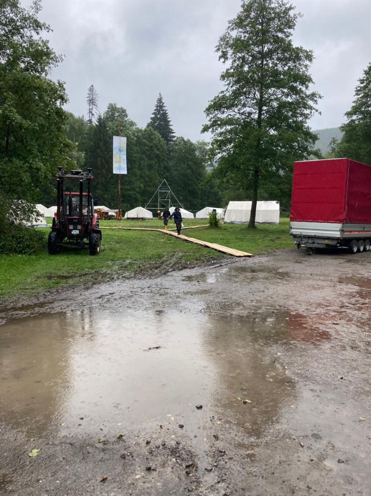
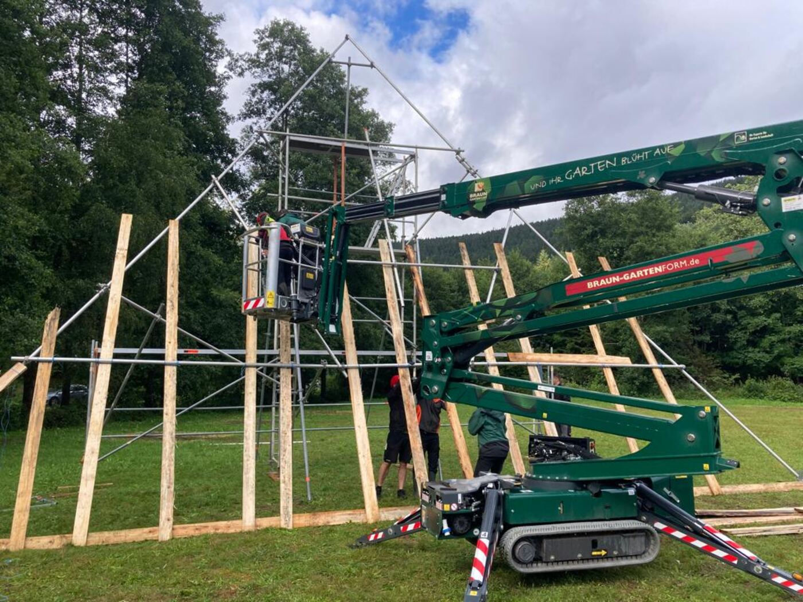
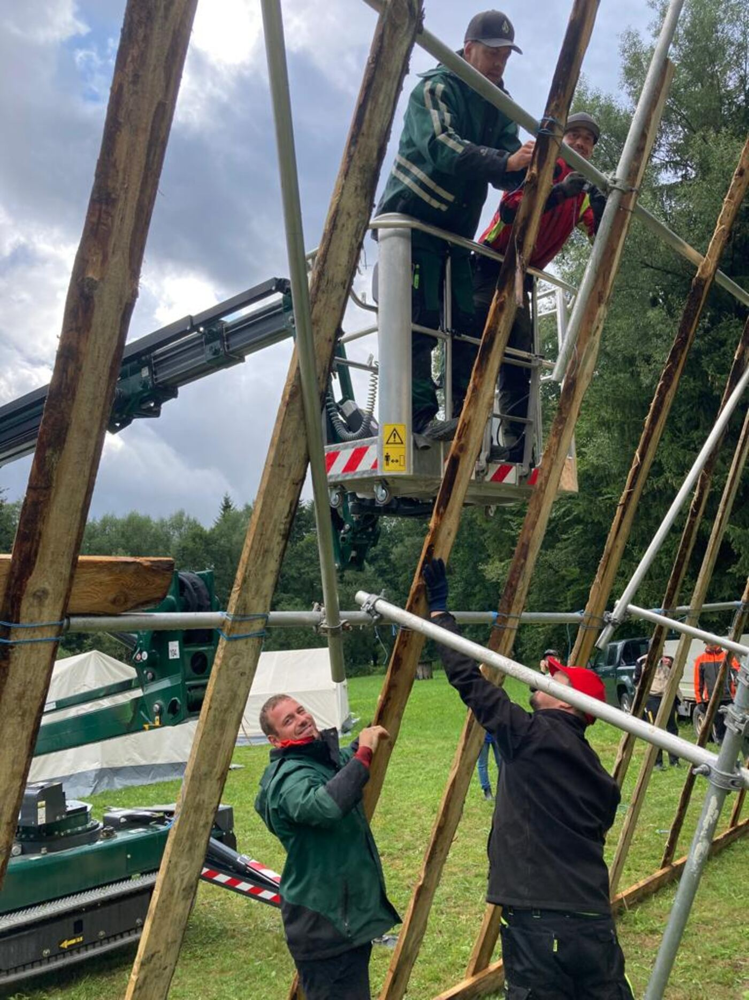
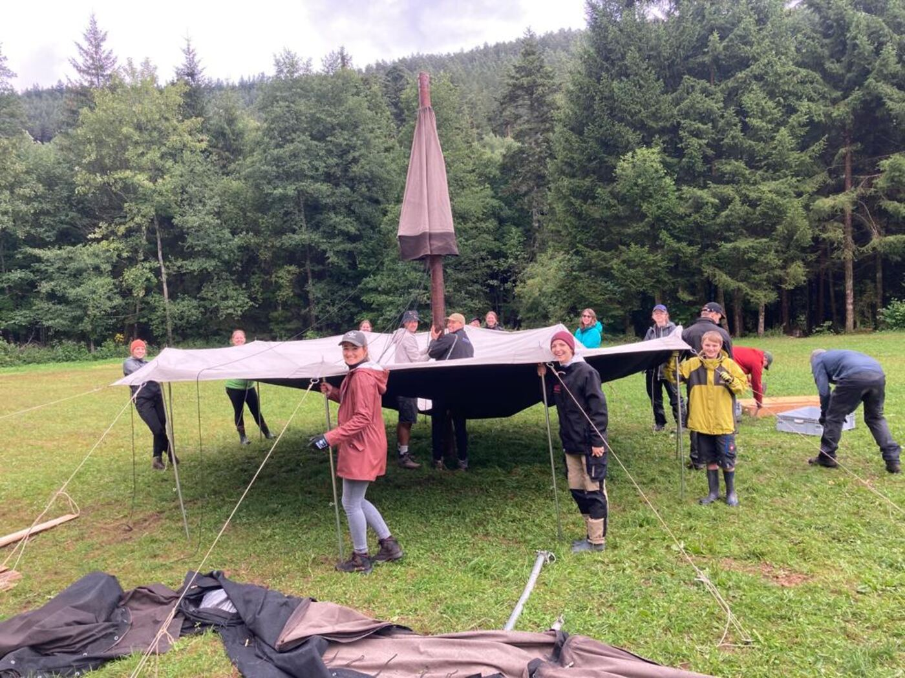
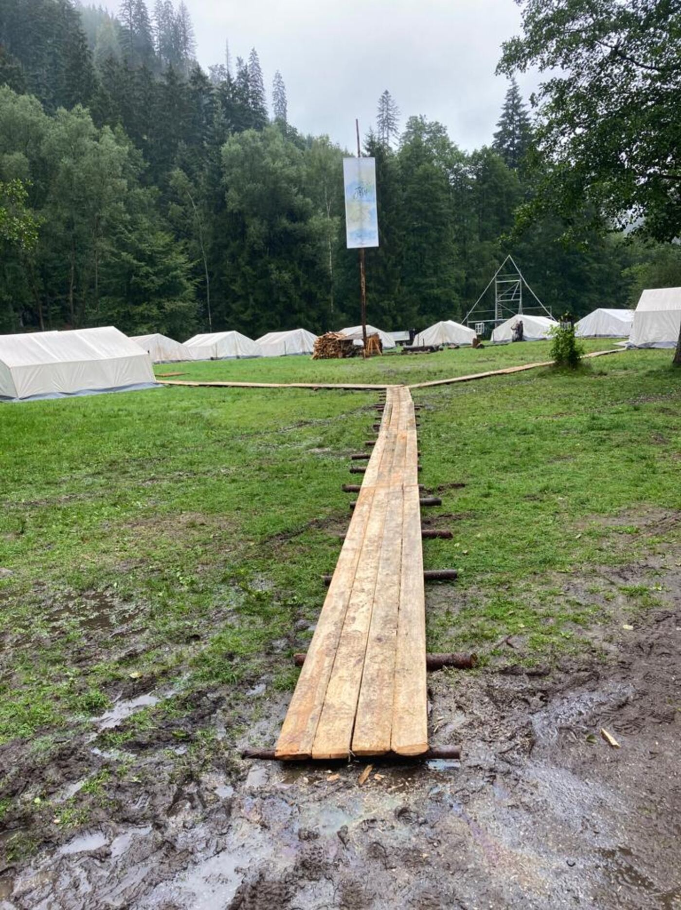
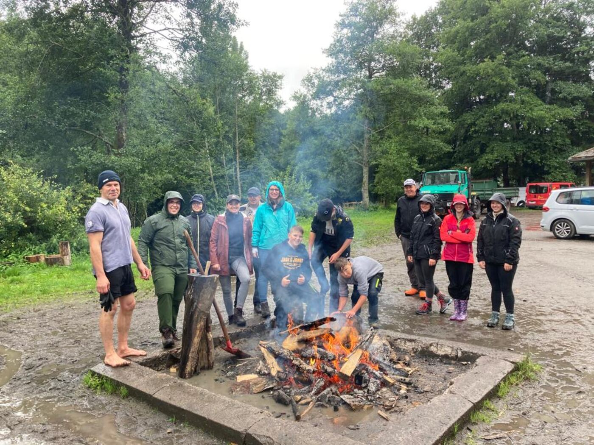
Gesamtkirchengemeinde Spielberg-Egenhausen
Träger und Organisator der JULA-Arbeit ist die Evangelische Gesamtkirchengemeinde Spielberg-Egenhausen, aus der auch der Großteil der Mitarbeitenden stammt.
Ein Leitungsteam und mindestens 40 weitere Mitarbeitende kümmern sich während der Lagerwoche intensiv um ca. 110 Kinder. Während einer intensiven Vorbereitungszeit von ca. neun Monaten wird auch beim JULA 2027 sicher wieder jede Menge auf die Beine gestellt.
Auf einen Blick
- Über 25 Jahre JULA-Geschichte
- Ca. 110 Kinder pro Lager
- Mind. 40 ehrenamtliche Mitarbeitende
- Ca. 9 Monate Vorbereitungszeit
- Für die 1. bis 8. Klasse
Jesus näherbringen
Wichtig ist uns vor allem, den Kids die biblischen Geschichten rund um Jesus Christus näherzubringen. Das ist unsere gemeinsame Leidenschaft!
Gemeinschaft erleben
Zusammen zelten, essen, spielen und lachen – eine Woche, die verbindet.
Jesus begegnen
Biblische Geschichten, Andachten und ehrliche Gespräche über den Glauben.
Abenteuer erleben
Geländespiele, Lagerfeuer und jede Menge Programm mitten in der Natur.
Nichts wie los zur Anmeldung!
Wir sind schon sehr gespannt auf die Zeit mit den Kids. Noch Fragen? Einfach das Kontaktformular nutzen.